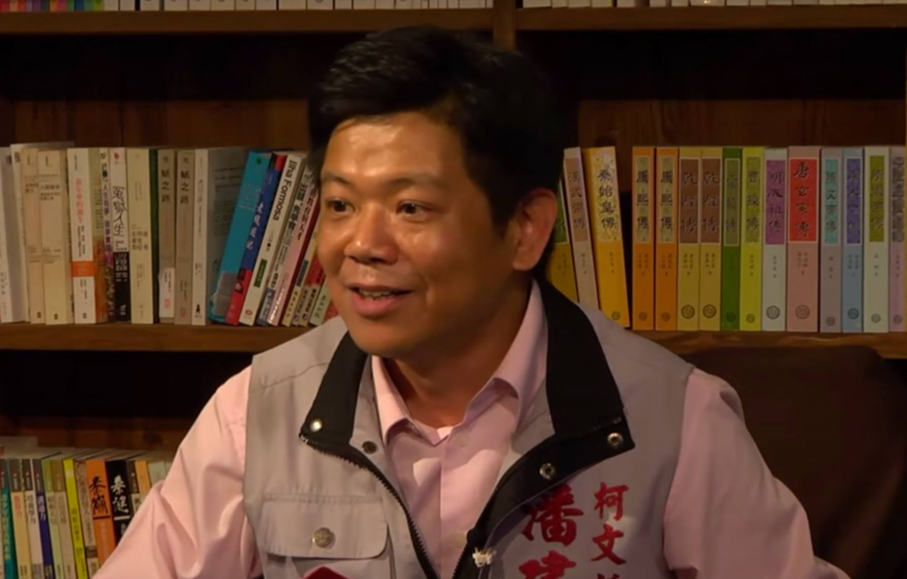
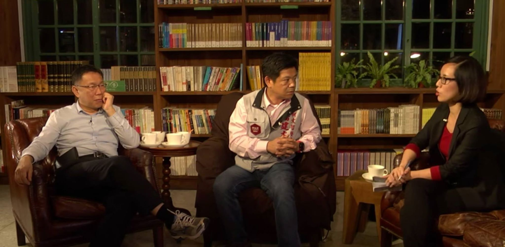
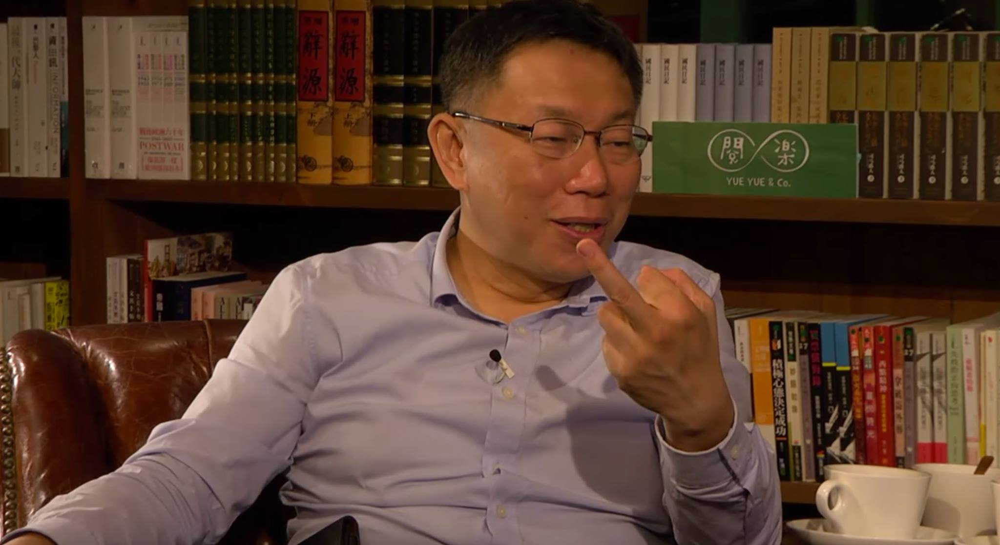
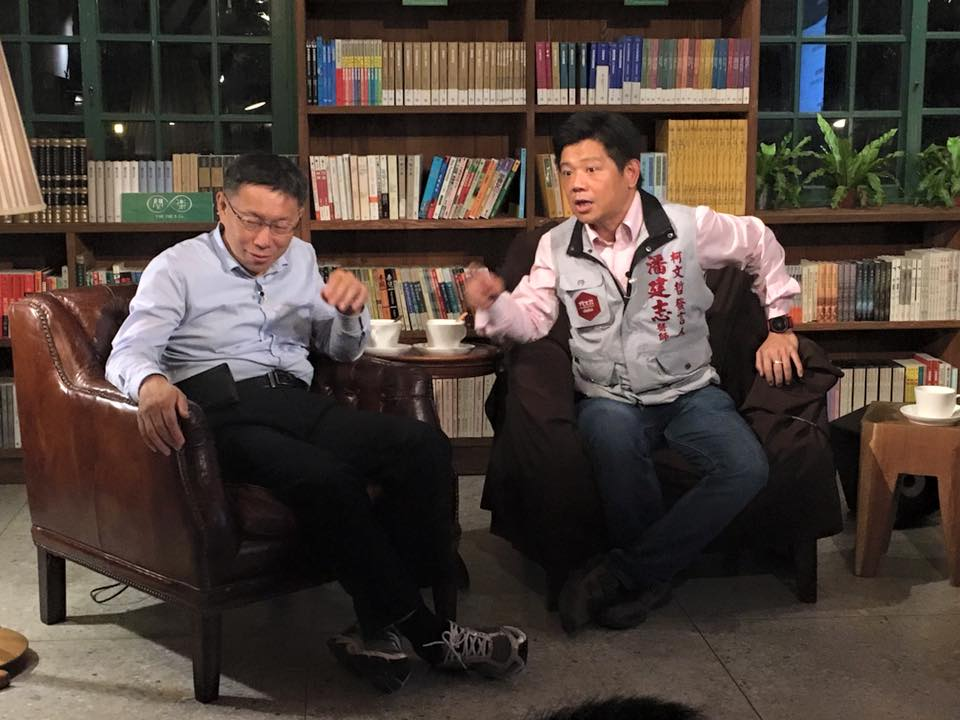
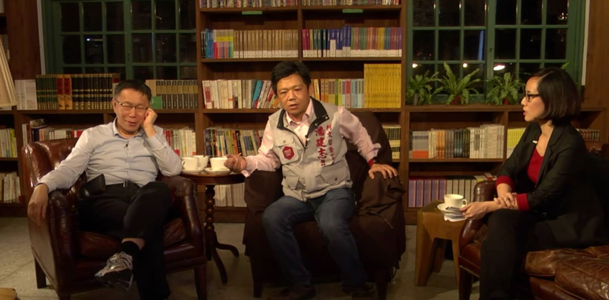

柯文哲夜問系列座談進行到第四場，遇上了當時擔任他市長競選總部發言人潘建志，儼然是「前老闆與前員工」的組合。潘建志從部落客、政論名嘴、柯文哲競選團隊發言人，到正式參選立委，途中也與民進黨整合的波折不斷，加上藍營鐵倉選區對上國民黨「王子」蔣萬安，跟柯 P 一樣主打「白色力量」，政治素人潘建志是否能如願進入國會呢? 外科醫生和精神科醫師帶來甚麼樣的火花，前老闆也刀槍直入問了許多尖銳問題和提點選戰策略，讓我們一起來看。
座談一開始主持人請潘建志用他精神科醫師的專業來分析台灣，若把台灣看成一個人，要如何分析台灣的主體意識? 潘醫師回道，「台灣是多重人格性格，曾經在很多寄養家庭成長的小孩。從西班牙、荷蘭、 鄭成功、清廷、日本人、 國民黨、民進黨共換了七個政權，各個朝代對歷史的詮釋都不同。即使到現在的台灣你可以看到像郝柏村那樣的榮民伯伯心繫中國，也有像李登輝覺得自己的原鄉是日本，現在很多人就把台灣當作自己的故鄉。」而治療多重人格的方法就是要將不同的人格整合，台灣也是一樣慢慢找出自己的共識。
對此柯文哲也回應，他之前競選的理念也是主張台灣是移民社會，我們有不同的過去，但有共同的現在 ，一起走向共同的未來，就是多元彩虹的概念。但柯文哲提醒，融合的首要條件是「容忍」。
主持人接著提問潘建志用如何看待台灣的集體心理狀態，潘建志認為整合的過程很重要，台灣現在藍綠對立、統獨意識都講不出結果，最後只能用九二共識「維持現狀」模糊化，台灣內部都沒有共識未來的路怎麼走。
對於轉型正義，潘建志認為過去威權體制，就是用「慢性創傷後壓力症候群」去控制人，一改朝換代時都要殺一儆百，那些壓力症候群的人民就會逃避討論政治。而台灣每年的 228 和平紀念日就是追求歷史的真相的轉型正義，這跟多重人格的治療要自我對話、對自己的認識是一樣的。
由於 318 太陽花學運週年的發文，潘建志在網路上引起不少爭議；對此，潘也在座談中反省，表示自己過去當部落客常用尖銳的用詞跟網民筆戰，但既然選擇當「政治人物」要多傾聽民意。一聽到「政治人物」四個字，柯文哲忍不住笑說，「唉呦，我跟你講啦，你如果要參選，就不要當政治人物比較好選！」他認為台灣的「政治人物」已經被汙名化的，所以不要自稱政治人物。
柯文哲也提醒潘建志，要當政治人物，不是要做政治的領導者，而是文化的傳道者，告訴人民想法，「政治人物有三級，最厲害的他的意志就是人民的意志；第二級，人民的意志是你的意志；第三級，他的意志不是人民的意志，像是馬英九。」柯文哲鼓勵潘建志嘗試做第一級的政治人物，把自己的想法說服變成人民的想法。
圖：柯Ｐ在數台灣的政治人物有幾種
潘建志接著用精神分析柯文哲這樣的政治人物，稱他是百年一見的奇葩。潘建志舉國外文章分析為例，「大部分的政治人物都有病」，像患有躁鬱症的英國前首相邱吉爾最後卻救了英國，「改變的歷史的英雄都不是正常人」。人民期待英雄帶領我們，但英雄往往都是異類。潘建志說政治人們都期待政治人物都要能力很好、很辛勤工作、要很謙卑等等，這些特質加起來都好矛盾。柯文哲也笑說，「這通通加起來（的政治人物），都是假的！」
立法院昨趕在會期的最後一天，三讀通過《病人自主權利法》，潘建志質疑重度失智的患者處於失能的狀態，不能正確表達自己的意見，對某些個案還是要有專人鑑證。而柯文哲也表示《病人自主權利法》還有三年才上路，也是因為實行細則還需要時間討論清楚。
網友提問關於全民健保法案和醫療崩壞的問題，潘建志認為政府要接受人口老化的事實，醫療支出在成長，但政府拼命縮減支出，導致血汗醫護。美國醫療支出占 GDP 約 16％，而台灣卻只有 7％。柯文哲也附和，健保真正的問題是醫療支出太少錢，健保很好，但不是甚麼都能 cover。
如果要改全民健保法案，潘建志認為「總額給付制度」中醫療服務以點數給付是違憲的，「沒有公共服務是用點數的」，他認為應針對憲法中的「保障人民財產權」向大法官提出釋憲。而柯文哲用一句話回應健保問題的解決方法，「健保到底是社會保險還是社會福利？如果是社會保險，就要保大不保小，不能全部 cover；如果是社會福利，那就要交多一點（保費）。」
關於醫療崩壞的部分，柯文哲回應美國採市場原則，透過自由市場來決定醫師薪資，若薪水高就不怕找不到醫生，「但台灣健保是共產主義」，不同科醫師所需門診時間不同，卻領一樣的錢。而潘建志更氣憤地提出，補充保費到現在共收了兩千億，卻當作準備金放著，醫界已經嗷嗷待哺，應該將經費感庫提撥給醫療缺口。
針對最近炒得火熱的食安法，潘建志認為頂新被判無罪是因為檢察官收證不夠，食安法應該要修改，讓國外進口商能被檢測認證，食安警察有能力去國外做調查。而柯文哲認為食安法八年修八次，頂新案還會被判無罪，就表示問題不在法令，而是執行。
潘建志另外特別強調他的政見之一是要松山機場遷移變成中央公園，他拿出請插畫家繪製的想像圖，公園中設置滯洪池可以防止洪患，讓基隆河堤防不用這麼高， 改善市容景觀。柯文哲認為松山機場的空地要變成甚麼樣子，是台北市未來改變唯一的關鍵，可以再討論。
惜才心切，柯文哲最後特別提問潘建志「你一直無效整合民進黨，如果重來一遍，你要怎麼改進？」離投票日只剩下三個禮拜，他叮嚀潘建志，決定選戰勝敗的關鍵，是要整合樁腳敵軍派系，比說服民意更重要，並談到自己就職一週年的影片提醒潘建志，「反省才能監督，才有進步」